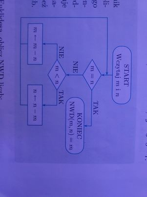

Specyfikacja dla algorytmu Euklidesa.
Dane: Dwie liczby naturalne m i n, m<=n.
Wynik/: NWD(m,n) –największy wspólny dzielnik m i n
Lista kroków dla algorytmu Euklidesa.
Krok 1 Jeśli m=0, to n jest szukanym dzielnikiem. Zakończ algorytm.
Krok 2 r=(n mod m), n=m, m=r. Wróć do kroku 1
